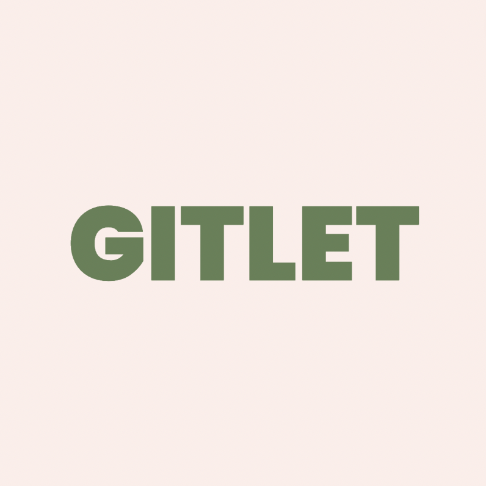
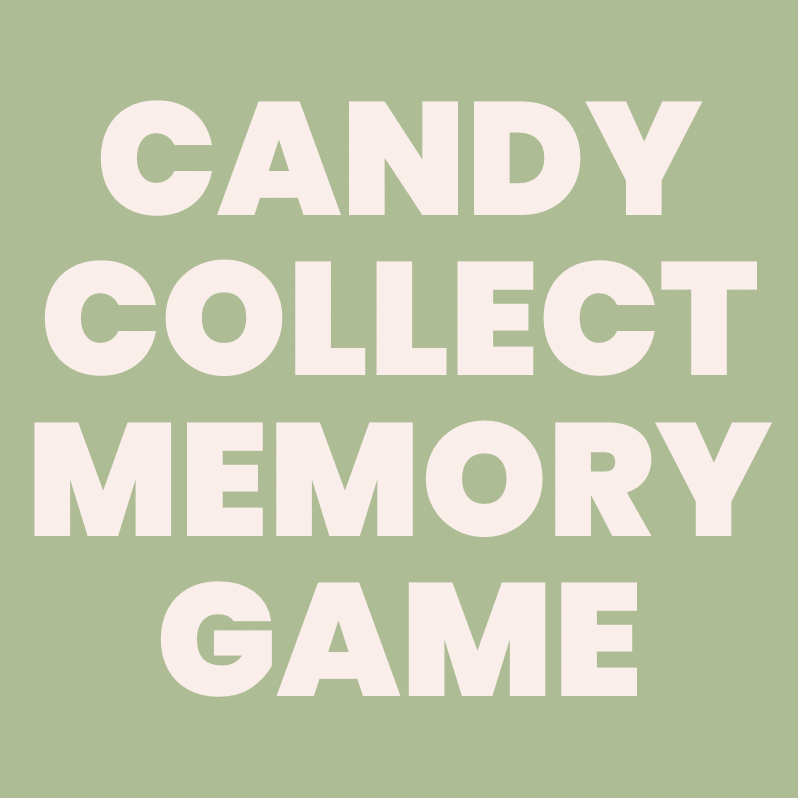
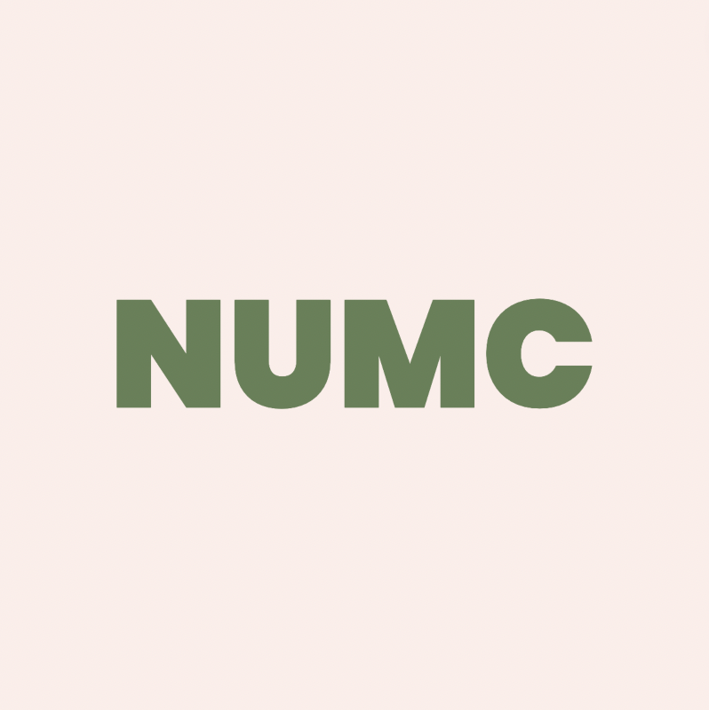
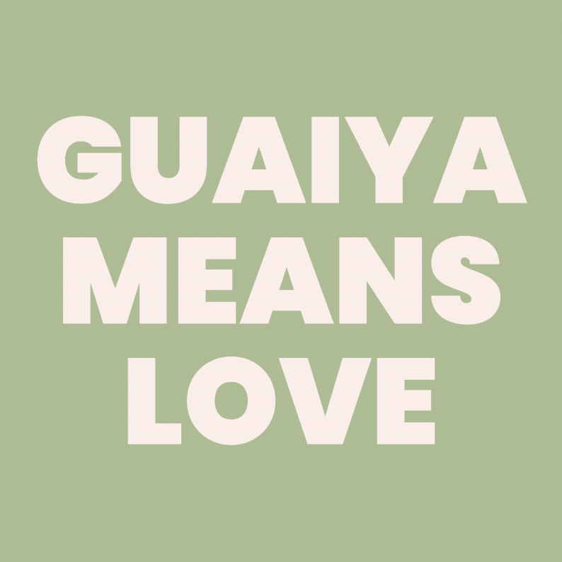
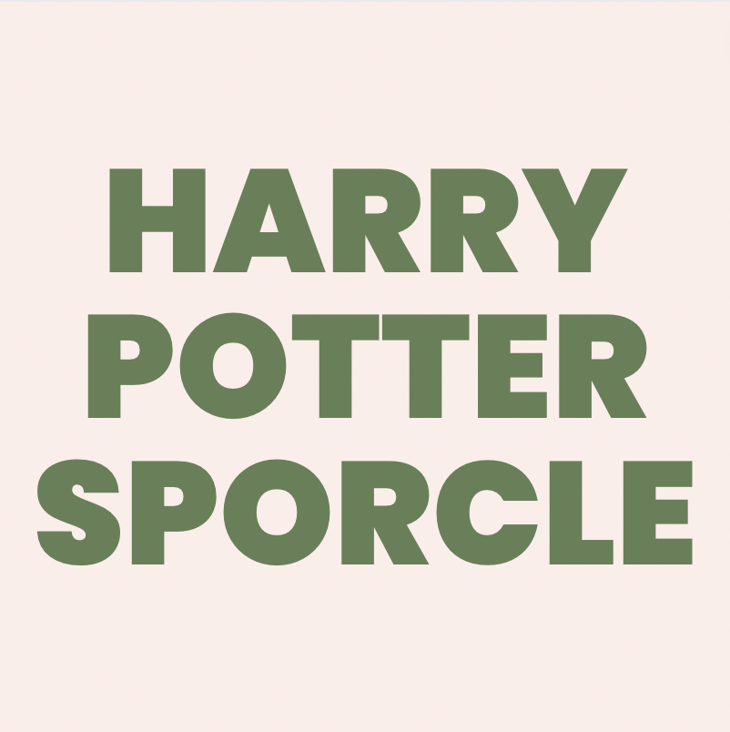
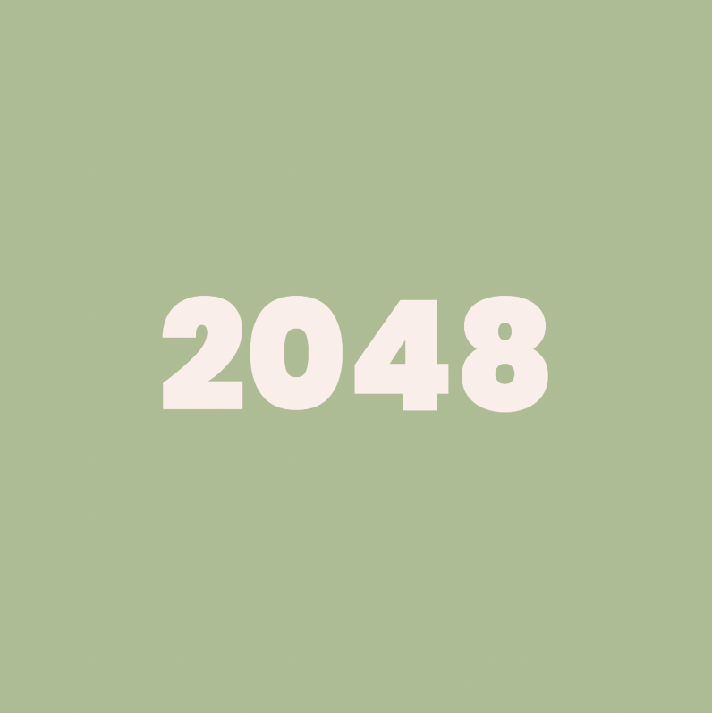
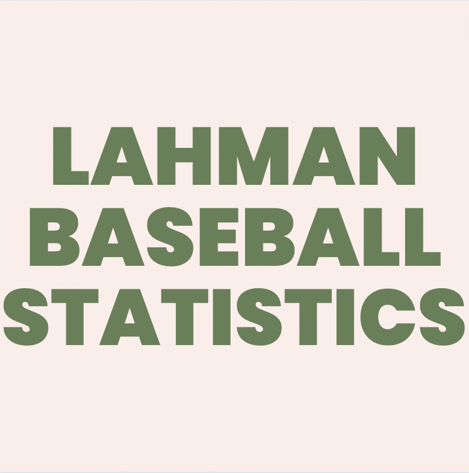
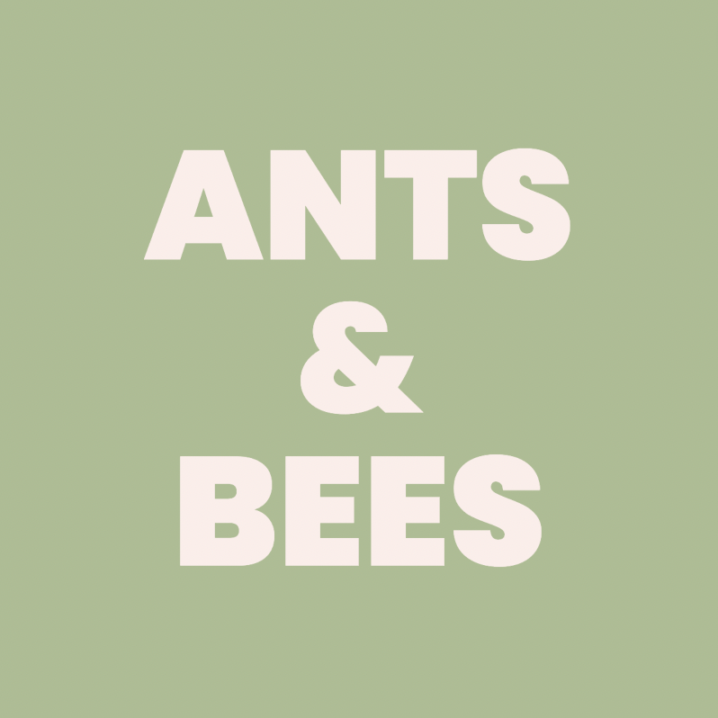
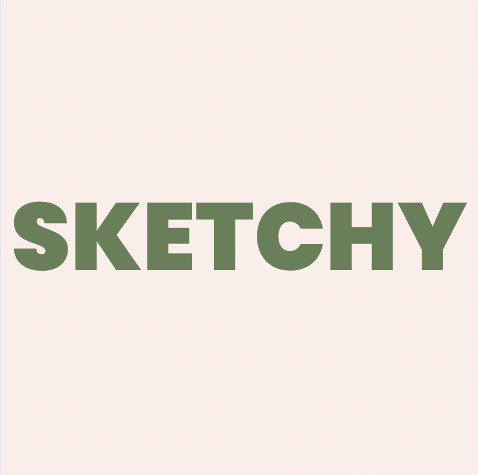
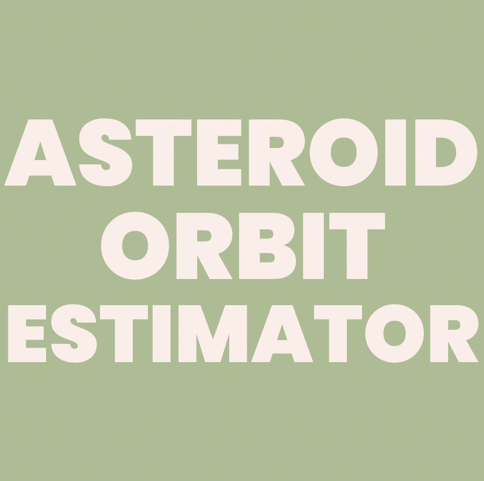

Alternate Email:
jessiejuheehong@berkeley.eduAbout me
Hi, Hello! I’m Jessie, a second-year student majoring in EECS at Berkeley. I’m super interested in software (product) development because
I really love bringing useful ideas and tools to life, and am exploring various aspects of it through different courses, research, and extracurriculars
spanning Web Development, Database Management, Cloud Computing, and Machine Learning.
So far, “career-wise” I’ve had most experiences with web applications & programming—I’ve worked as mostly full stack developer in quite a few labs and clubs as I really like both the frontend and backend engineering—and I really love building well-designed and useful or fun web apps.
In terms of languages I am most experienced in, I am most familiar with Object-Oriented Programming and Designing in both Java and Python, which I've used to create multiple games, a mini version-control system, a mini database system, sentiment analyzer tool, etc.
I’m generally really curious about a lot of things and am trying to explore different areas such as DBMS and ML, algorithms, Cloud etc, all of which I’m really enjoying learning about.
At the same time, learning really excites me—I tend to Stay Curious (which is one of my unofficial life mottos) and take a really deep dive into anything I’m interested in, and over the years I’ve gotten good at
picking things up on the fly. So I’m also super open to exploring and learning in different areas of software engineering (and am always actively looking for such opportunities).
••••••••••••••••••••••••••••••••••••••••••••••••••••••••••••••••••••••••••••••••••
I like to enjoy a warm cuppa tea on most evenings—all types of black, green, or fruit tea will do, although my favorite is lavender earl grey. I rely on chocolatey things to power me up more than I probably should, and can talk your ears off if you talk to me about Pokemon. I love traveling absorbing the unique ambience that each place has to offer. I am both a literature and math geek, and like to write stories or exercise my brain with competition maths. I'm a big fan of all things "puzzles": jigsaws, mysteries/crimes, and brain teasers.
My Skills
Other Programming Skills I Have Exposure To
My Timeline
2020 - present
Electrical Engineering & Computer Science, Bachelor's - UC Berkeley
I’m currently a sophomore majoring in EECS at Berkeley. So far I've taken courses in data structure, algorithms, machine structures, data science, information devices and systems, and discrete math/probability theory, to name a few. I’m also staying active in organizations such as Eta Kappa Nu (HKN), Women in Computing and Data Science @ Berkeley (Machine Learning Committee), and Cloud at Cal.
2022 - present
Software Developer - CoRE Laboratory
I’m building a CS-education video game using JS/HTML/CSS (+ Monogatari JS framework) in a team of 4. I design and implement (new) gameplay elements and mechanics, polish the game GUI, and work on UI/UX flow. My current main areas of work lies within the “Hack 2” part of the game, and the “Notebook”, which spans across different hacks and serves as coding cheatsheet and memo for users.
2022 - present
Backend Developer & Designer - Web Development at Berkeley
I’m creating an IOU cost splitting web app tool largely built on Node and React in a team of 5 developers. My main focuses are on the backend part relating to user login/account and keeping track of costs (based on data inputted by users), although I stay very active in other parts of the project, and particularly the design part.
2021
Web Developer & Research Assistant - Neuroeconomics Laboratory
I designed and developed multiple versions of Memory-based Choices (MBC) and Stimulus-based Choices (SBC) surveys using jQuery/HTML/CSS. On the frontend side I made the survey timed and interactive, and on the backend side I collected data useful for our research (eg. identifying any changed inputs or measuring time of deliberation).
2020 - 2021
Full Stack Developer - IEEE UC Berkeley Student Branch
I created a mix of deduction and drawing party game similar to Skribbl.io in a team of 8. My main focus was developing live-time synced chat and canvas featuring color wheel and multiple drawing tools using Socket.io, Node.js, and p5.js.
2019
Astrophysics Researcher and Programmer - Summer Science Program (SSP)
I tracked Potentially Hazardous Asteroid PHA 2002 QF15 in a team of 3 and determined its orbit through data extraction and processing. I implemented the orbit trajectory predictions and calculations with Python (using numpy, scipy, and matplotlib), and the estimated orbit data output by the program was published in the Minor Planet Center Publication.
My Portfolio
Here is a selection of some of my work spanning various programming languages:
Job Shop Scheduling
I built a Dynamic Programming + Greedy Algorithms Python program to execute a profit-maximizing 1-machine no task abortion job shop scheduling problem where each task had different durations, deadlines, and profits (with exponential decay if past deadline). Specifically, I contributed one Greedy solution and the entire Dynamic Programming solver.
RookieDB
I’m building a bare-bones Java database system supporting executing simple transactions in series. I’ve added support for B+ tree indices, efficient join algorithms, and query optimization; currently I’m working on implementing multigranularity locking for concurrency as well as database recovery.

Gitlet
I designed and built a Java OOP version control system simulating Github by supporting most git functionalities, including init, add, commit, checkout (all 3 forms), log, global-log, rm, find, status, branch, rm-branch, reset, and merge.

Candy Collect Memory Game
I built a tile-based Java OOP game that would generate a “random world” each time, unless saved and loaded, in a team of two. I was responsible for most of the design of the game (graphics, game mechanics, the randomness in world generation, gameplay elements) and used a Model View Controller pattern, and implemented all these functionalities.

NumC
I built a C clone of Numpy implementing basic matrix operations such as fill_matrix, abs_matrix, add_matrix, mul_matrix, and pow_matrix. I sped up these operations using SIMD instructions and used OpenMP to parallelize them; I also used other optimizations including algorithmic changes, loop unrolling, and cache blocking.

Guaiya Means Love
I’m building a CS-education video game using JS/HTML/CSS with Monogatari JS framework. I wrote the “Hack 2” educational storyline to facilitate a step-by-step introduction to coding concepts, and am implementing all the gameplay elements/mechanics/animations. I’m also working on a “Notebook” element that will serve as programming concepts cheatsheets, and allow players to write in their own notes.

Harry Potter Sporcle
I built a web-based timed and interactive quiz inspired by the Sporcle Trivia Quizzes using vanilla JS/HTML/CSS.

2048
I implemented the game logic in an interactive Java clone of the famous game 2048—I mostly worked on the model part of the MVC pattern.

Lahman Baseball Statistics
I organized data using (My)SQL from Lahman’s Baseball relational database to analyze various batting/pitching/player statistics.
Voice Controlled Robot Car
I’m building a mobile robot car that will be made to move around according to voice input commands. Currently, the car can move around based on a pre-programmed path, and I’m now working on the voice control part.
Classifying Movies
I used the K-Nearest-Neighbour algorithm to build a movie genre classifier that takes in a mixed data of comedy and thriller movies and classifies them with 85% accuracy.

Ants and Bees
I built a Python OOP game inspired by Plants vs. Zombies. I mainly worked on designing and programming game logic and implemented the game agents and topologies.

Sketchy
I created a mix of deduction and drawing party game similar to Skribbl.io. Within the team, my main focus was developing live-time synced chat and canvas featuring color wheel and multiple drawing tools using Socket.io, Node.js, and p5.js.; I also worked on implementing the timed reveal of random letters of the given word (that players had to guess) with another developer.

Asteroid Orbit Estimator
I implemented the orbit trajectory prediction calculations of a potentially hazardous asteroid with Python (using numpy, scipy, and matplotlib), and the estimated orbit data output was published in the Minor Planet Center.
Behavioral Economics Surveys
I worked as web developer to identify data needed for behavioral economics research, and designed and built web-app surveys to collect those data using jQuery/HTML/CSS. (eg. I collected time until first key pressed, time between keys typed, and time until “Next” button pressed, which can all be used to measure confidence level of respondents in their answers.)